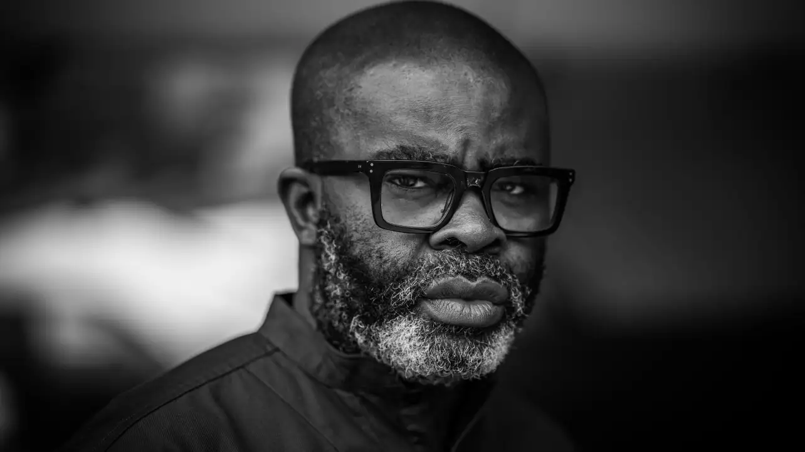
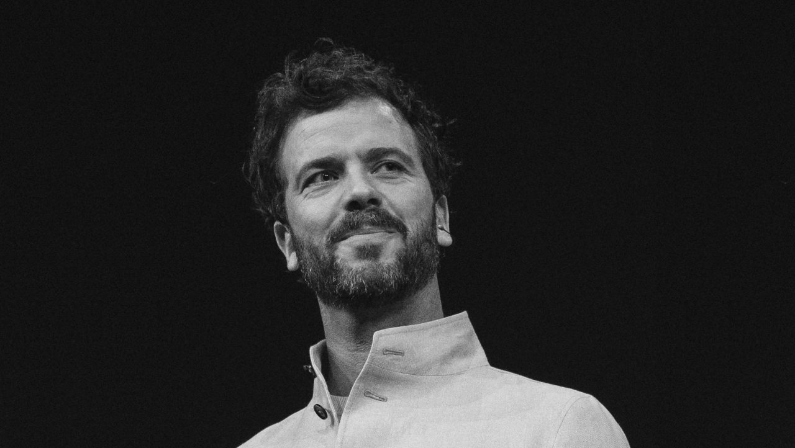

Human judgement is becoming the rarest creative skill.
Anyone can buy attention. Anyone can hire influence.
But credibility cannot be purchased. It is earned over years by people with something original to say, and it can be lost in a single partnership that never should have happened. KŪKAI exists to protect that value.
We represent extraordinary Culture Makers—artists, filmmakers, scientists, architects, technologists, chefs, designers, and thinkers whose work changes the way people think, feel, and see the world.
Every partnership begins with a simple question: should these two exist together?
Not commercially. Culturally. If the answer isn't yes, we don't make the introduction. Because the wrong collaboration damages both the Voice and the brand.
Our role isn't to broker transactions. It's to build relationships that feel inevitable—the kind audiences believe because they make sense long before a contract is signed.
We embrace AI, and every technology that expands creative possibility. Technology amplifies human intention. It never replaces it. The work still begins with remarkable people.
Authority is earned.
Trust is protected.
Culture follows.




niceaunties is a Singapore-based artist who uses the figure of the "auntie" as a lens for social commentary. Across Asia, the auntie is a loaded archetype: simultaneously revered and dismissed, central to community life yet coded as outdated, opinionated. Auntieverse, her ongoing world-building project, takes that figure and places her at the centre of surreal settings, speculative cities and imagined ecologies to explore themes of body image, consumerism, community and environmental change, engaging through satire and speculative fiction.
niceaunties trained as an architect and deploys spatial thinking, systemic perspective and world-building as an argumentative mode.
Her work has been presented internationally at the Louisiana Museum of Modern Art in Denmark, the V&A in London, and the AI Action Summit at the Grand Palais in Paris. In 2024, she presented Auntieverse in a TED Talk in Vancouver and her work has been featured in Forbes, The Guardian and The Straits Times.

Dr. Merritt Moore holds an Oxford PhD in Atomic and Laser Physics and is an Adjunct Professor and Research Scientist at NYU Abu Dhabi — and a professional ballet dancer with Ballet de l'Opéra de Nice.
During the pandemic, Moore brought her passions together to dance with robots she programmed. Her Robot/Human choreographies have been shown at Davos, Forbes Women's Summit, WORLD.MINDS in Belgrade, Switzerland, Germany, Mexico, France, Romania, USA and more.
This led to collaborations with Louis Vuitton and features in TIME, Financial Times, Vogue and BBC, plus a spot on Forbes 30 Under 30. Merritt was one of 12 candidates selected for astronaut training on BBC Two's "Astronauts: Do You Have What It Takes?", and one of the final 16 artists for the DearMoon project to travel around the moon on SpaceX's Starship. Her work explores human-machine interaction and quantum mechanics.

Angus Hervey is a solutions journalist and founder of Fix The News, one of the world's leading platforms for evidence-based reporting on global progress. For more than a decade, he has documented measurable gains in public health, energy, conservation and living standards that mainstream media consistently overlooks. Fix The News reaches over 80,000 readers across 195 countries and directs 30 percent of its revenue to small charities working directly on the problems it reports.
Reading hundreds of sources weekly for ten years builds a particular instinct for which ideas and projects are real and which are noise. It's why TED comes to him repeatedly: Hervey has appeared on their main stage four years running, both as speaker and curator, surfacing people and ideas before they break through. His argument is straightforward: the world is getting better in measurable ways, and almost no one is telling that story.


Francesca Hogi's work is built on a single counterintuitive premise: true love isn't about finding the right person, but becoming the right person. It's not random, but emerges from a relationship of unconditional respect, emotional and physical intimacy, safety, adoration and joy. Love is an action, not a feeling.
A former corporate attorney, Hogi's transition to human connection work began with personal study in dating and partnership. After appearing twice on Survivor, an experience that confirmed she cannot help but be true to herself even at significant cost, she trained formally as a matchmaker.
Her methodology centres on the conviction that people are the blueprint for the relationships they co-create; true love is an inside job. She distilled this into her book How to Find True Love: Unlock Your Romantic Flow and Create Lasting Relationships (Hachette) and FRANNY, an app helping people map and develop their romantic energy. Her two TED talks on flirting and true love have garnered 2.2M+ combined views.
Frankie Boyle is an experiential artist and creative director whose primary medium is light. Connecting sensory design, neuroscience and human behaviour, she creates spaces that communicate through all senses, below conscious awareness.
Frankie doesn't just design for emotional impact, but for the whole gamut of human interaction: her spaces shape how the people inside them connect, how they engage, how they remember. She believes the wellbeing crisis of our time sits within a crisis of the physical environment: people are hungry for spaces that foster genuine presence, and designing for the nervous system is one of the most powerful things we can do to foster connection.
Growing up with Developmental Language Disorder, dyslexia and ADHD, Frankie's first language was light. This heightened her sensitivity to how sensory environments shape human experience.
Clients include Samsung, Tiffany, Burberry and Magnum. Permanent works at Bristol Beacon and soon to be Canary Wharf and Ciro. Speaker at Google, Dubai International Lighting Summit and MK Illuminations Austria.

Alba Hurup Larsen is a Danish racing driver, Scuderia Ferrari member, the inaugural recipient of the FIA Women in Motorsport Award, and an unavoidable figure in the new generation of motorsport.
At 14, Alba won the FIA Girls on Track programme to become the fastest girl in the world, and joined the F1 Academy in 2025. Now in her second season, she has quickly established herself as a competitive athlete and a cultural presence with appearances in Vogue, Forbes, and several Tommy Hilfiger campaigns.
Off track, she founded Girls International Racing Lab at age fifteen, giving 15,000 girls globally their first track experience. GIRLS is aiming to balance one of the most gendered sports and build the pipeline for the future of racing.
Moving between sport, fashion and media, she represents a new generation of athletes redefining leadership on and off the track.
Martha Fiennes is an award-winning filmmaker, screenwriter and digital artist exploring the extraordinary power of human imagination to shape what comes next.
For Martha, artists are athletes of imagination. They are highly attuned to what does not yet exist: able to feel its potential, give it form and undertake the exacting work required to bring it into the world. More than a decade before generative AI entered the mainstream, she was already imagining a new cinematic language, combining live-action filmmaking, bespoke AI systems and generative technologies to pioneer a form of cinema that continuously evolves — moving-image works that never repeat in exactly the same way.
Her acclaimed career spans film, contemporary art and emerging technology. Her debut feature, Onegin, starring Ralph Fiennes and Liv Tyler, won at the Tokyo International Film Festival and earned a BAFTA nomination. Her second feature, Chromophobia, featuring Penélope Cruz, Kristin Scott Thomas, Damian Lewis and Ian Holm, closed the Cannes Film Festival.
Her groundbreaking digital artworks, including Yugen, featuring Salma Hayek Pinault, have been exhibited at the Venice Biennale, the National Gallery, the V&A, LACMA, the Serpentine Gallery, Christie's Art+Tech Summit, the Science Museum IMAX and Art Dubai, where Yugen was described by Vogue Arabia as "best in show."